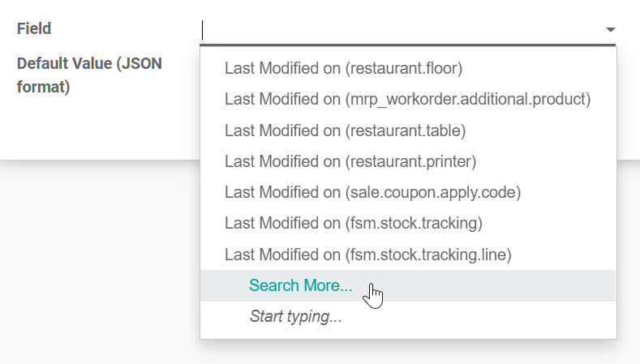
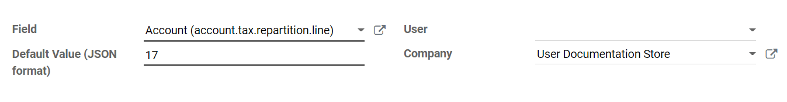

TaxCloud integration¶
Warning
The Odoo TaxCloud integration has begun its decommissioning, starting in Odoo 17. New installations are prohibited in Odoo 17. In Odoo 18, the TaxCloud module(s) will not exist at all. Odoo recommends the use of the Avatax platform, instead.
See also
TaxCloud calculates the sales tax rate in real time for every state, city, and special jurisdiction in the United States. It keeps track of which products are exempt from sales tax, and in which states each exemption applies.
TaxCloud registration¶
Register an account on TaxCloud.com and complete the setup. Once you go live, get the TaxCloud API Keys by clicking on Stores, then Get Details.

Enable TaxCloud¶
Go to and in the Taxes section enable TaxCloud.
Add the store’s Login ID under API ID and the store’s Key under API KEY. Click on Save.
Click the Refresh button (🗘) next to Default Category to import the TIC Taxability Information Codes product categories from TaxCloud. Some categories may imply specific tax rates or exemptions.
Select a Default Category and Save. The Default Category is applied when no TaxCloud Category is set on your products or product categories, or when no product is found on an order/invoice.

Set TaxCloud categories on products¶
If you need to use more than one TIC category (i.e., the Default Category), go to the product’s General Information tab and select a TaxCloud Category.
If you want to configure multiple products simultaneously, ensure they share the same Product Category and click on the external link button (🡕) to set a TaxCloud Category on the Product Category instead.
Note
If you set a TaxCloud Category on a product and another on its Product Category, Odoo only considers the TaxCloud Category found on the product itself.
A TaxCloud Category set on a parent product category does not apply to its child product categories. For example, if you set TaxCloud Category on the All Product Category, it is not applied to the All/Sales Product Category.
Important
Make sure your company address is complete, including the state and the ZIP code. Go to to open and edit your company address.
Automatically post taxes in the correct tax payable account¶
To make sure the new taxes generated by the TaxCloud integration are created with the correct Tax Payable account, create a user-defined default. This process should be repeated for each one of your companies that uses TaxCloud.
Warning
A user-defined default impacts all records at creation. It means that every new tax is set up to record income in the specified Tax Payable account unless the tax is manually edited to specify a different income account (or if another user-defined default takes precedence).
To do so, go to , find the company’s Tax Payable account, and click on Setup. Take
note of the number after id= in the URL string; it is the Tax Payable account ID and will
be used later.

Activate the developer mode, then go to and click on Create.
Click on Field drop-down menu and then on Search More….
Use the search bar to filter for the Tax Repartition Line model, and use it a second time to filter for the Account field. Select the line with Tax Repartition Line under the Model column.

Once you are back to the User-defined Defaults creation, enter the Tax Payable account ID you took note of earlier under the Default Value (JSON format) field.
Select the company for which this configuration should apply under the Company field and click Save.
Automatically detect the fiscal position¶
Sales taxes are calculated in Odoo based on fiscal positions. A fiscal position for the United States is created when enabling TaxCloud.
You can configure Odoo to automatically detect to which customers the fiscal position should be applied. To do so, go to and select Automatic Tax Mapping (TaxCloud). Enable Detect Automatically and then Save.

Now, this fiscal position is automatically set on any order or invoice if the customer country is United States. This triggers the automated tax computation.
Note
To get the sales taxes on a sales order, confirm it or click the Update Taxes button next to Add Shipping.
Interaction with coupons and promotions¶
If you use the Coupon or Promotion Programs, the integration with TaxCloud might behave unexpectedly. Indeed, as TaxCloud does not accept lines with negative amounts as part of the tax computation, the amount of the lines added by the promotion program must be deduced from the total of the lines it impacts.
Important
This means, amongst other complications, that orders using coupons or promotions with a TaxCloud fiscal position must be invoiced completely - you cannot create invoices for partial deliveries, etc.
Another unexpected behavior is possible. For example, you sell a product for which you have a promotion program that provides a 50% discount. If the product’s tax rate is 7%, the tax rate computed from the TaxCloud integration displays 3.5%. This happens because the discount is included in the price sent to TaxCloud. However, in Odoo, the discount is on another line entirely. Still, the tax computation is correct. Indeed, a 3.5% tax on the full price is the equivalent of a 7% tax on half the price, but this might be unexpected from a user point of view.